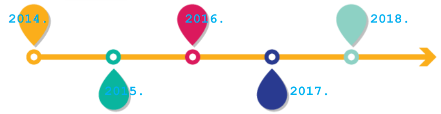

Plesni studio
Euforija
Duga Resa fest
SUDIONICI DRF 2018.
Sponzori

Na društvenim mrežama
Povijest

2014. - Premijerno izdanje DugaResaFesta kao festivala na kojem su se u pjevanju natjecali predstavnici
osnovnih škola Karlovaèke županije održalo se 01.06.2014. Voditelji prvog DRF-a su bili Ana Lesiæ i Mario
Valentiæ, a u žiriju su sjedili predstavnici škola sudionika (uglavnom nastavnici glazbene kulture). Na
festivalu je nastupilo 15 škola, ocjenjivalo se uživo ocjenama od 1 od 8, te 10 i 12, a pobjedu su odnijele
Doris, Gloria i Daria s pjesmom ''Sve što ti nisam znala dati'' (Feminnem). Kao gost je nastupio Marijan
Moniæ. Festival je odmah prozvan karlovaèkom malom Eurovizijom.
Pobjednici: OŠ Banija, Karlovac
2015. - Ukupno 16 osnovnih škola Karlovaèke županije natjecalo se na drugom DRF-u. Sastav žirija je
promjenjen, pa su umjesto nastavnika osnovnih škola sudionika o pobjedniku ocjenjivali glazbeni
struènjaci i ljudi iz svijeta medija poput Sanje Doležaj, Vesne Žagar, Ivanke Boljkovac, Marka Tomasoviæa,
Uršule Tolj... Pjesme su uglavnom bile domaæe, tek 4 stranih izvoðaèa. Pobijedila je ogulinka Karla Ana
Sabljak s pjesmom ''Èarobno jutro'' (Nina Badriæ). U sklopu Festivala održana je i prva samostalna izložba
mladog umjetnika Maria Puškariæa iz Josipdola.
Pobjednici: OŠ Ivana Brliæ Mažuraniæ, Ogulin
2016. - DugaResaFest postaje vikend-festival, prvotno natjecanje u pjevanju dobiva naziv DRF Euphoria.
Uvodi se veèer klasiène glazbe DRF Classico u kojem se natjeèu mladi instrumentalisti Glazbene škole
Karlovac, te ARTzona namijenjena likovno-literarnom izrièaju. U sklopu Festa je bila održana i radionica
akademskog slikara Vladimira Bašiæa. Festival koji se provodi uz slogan ''Pjevaj, pleši, sviraj... zabavi se!'',
u izdanju treæe godine tako ispunjava sve navedene elemente pa i više od toga. Festival je vodila Uršula
Tolj, a u promociji DRF-a videoselfije su snimili Jacques Houdek, Antonija Šola, Ivan Vukušiæ, Sanja
Doležal, Luka Nižetiæ, Mia Negovetiæ... Festival je dobio i svoju himnu koju je napisao glazbeni direktor
DugaResaFesta Goran Topolovac. Na Euphoriji je meðu 14 natjecatelja najbolji bio Leon Findrik s
pjesmom ''Writings on the wall'' koja je bila jedina strana pjesma u konkurenciji, na Classicu je pobjedu
odnio Marin Komadina na saksofonu. Termin održavanja DRF-a bio je pomaknut zbog smrti dugoreškog
gradonaèelnika.
Pobjednici: Euphoria: OŠ Dubovac, Karlovac, Classico: Marin Komadina, Glazbena škola Karlovac
2017. - Prošlogodišnje izdanje DugaResaFesta obilježio je prijelaz iz lokalnog u nacionalni kaarakter
ovog festivala. Na veèeri Euphoria 2017. Nastupile su pored osnovnih škola iz Karlovaèke županije i škole
iz Zagreba, Rijeke i Osijeka. Show je trajao gotovo 3 sata, a vodili su ga Iva Grman, Adrijana Dimiæ i Iván
Manuel. Tijekom programa voditelji su se uživo javljali iz backstagea gdje su razgovarali s malenim
natjecateljima. Euphoriji su prethodile ARTzona i Classico. Usklopu manifestacije održale su se
mnogobrojne radionice i edukacije za prijavljene sudionike: radionica solo pjevanja, radionica scenskog
nastupa, slikarsko-kreativna radionica, edukacija tehnika boravka u prirodi i Uvod u planinarstvo, te
radionica izrade dokumentarnog filma. Na Classicu je meðu 12 natjecatelja pobjedu odnio mladi violinist
Tomislav Špehar koji je izveo ''Ciganski napjev'' Pabla de Saraste, a na Euphoriji je pobijedila rijeèanka
Medea Market-Sindik s pjesmom Barbare Streisand ''Somewhere''.
Pobjednici: Euphoria: OŠ Dubovac, Karlovac, Classico: Tomislav Špehar, Glazbena škola Karlovac
Misija DugaResaFest-a je pružati djeci i mladima priliku da otkrivaju, pokazuju, razvijaju i unaprijeðuju svoje umjetnièke talente. Vizija DRF-a je festival koji æe promovirati Dugu Resu i postati mjesto susreta mladih talenata, te asocijacija za djeèji talent show visoke produkcije. Cilj nam je pokriti sva podruèja umjetnièkog i kretaivnog izražavanja; veæ ove godine pokrivamo ih ukupno pet:
Buduænost DRF-a? Planova ima mnogo... U buduæim godinama možda æemo dati priliku i dramskim talentima. Planiramo otvoriti prostor djeèjim voditeljima i novinarima kroz DRFradioteleviziju i DRFportal. Želja nam je imati natjecanje autorskih pjesama, a omoguæili bismo sudjelovanje i srednjoškolskom uzrastu. Ideja je i spojiti sve oblike umjetnièkog izražavanja u formi mjuzikla. S obzirom na velik broj planiranih dogaðanja, DugaResaFest bi se podijelio u ljetno i zimsko izdanje, a možda æemo iæi i u goste u neke druge gradove. Kao krovni naziv za sve ono što želimo djeci i mladima pružiti, omoguæiti im, pouèiti ih i poduprijeti u njihovom razvoju, ovaj festival ima potencijal da nadiðe umjetnièki karakter (možda ukljuèimo i znanost, sport, tradiciju...), a želja nam je oblikovati svoje djelovanje i na internacionalnoj platformi. Sve su to ideje i moguænosti. Ono u što smo zasad sigurni jest da smo na dobrom putu da neke od tih planova u nekom buduæem izdanju i izrealiziramo. Svoje ciljeve za prvih pet godina smo ispunili: proširili smo koncept na više razlièitih talent-najecanja, nadišli smo lokalni karakter, zadržali smo visoku produkciju i prepoznati smo meðu školama, djecom i mladima, u društvenoj zajednici, profesionalnim krugovima, uspijevamo osigurati i (nikad) dovoljno volontera i (nikad) dovoljno financija... Vrijeme je za više! Letvicu smo visoko postavili. Hvala što ste s nama na tom putu, pratite nas i podržavate! Bez vas ne bismo mogli. Važno nam je ostati djeèji talent festival s 5 zvjezdica i s ponosom stajati iza ovog znaèajnog i kvalitetnog zabavno- edukativnog projekta. Sve za djeèji osmijeh, pljesak publike i toplinu oko srca. Mi smo DugaResaFest!